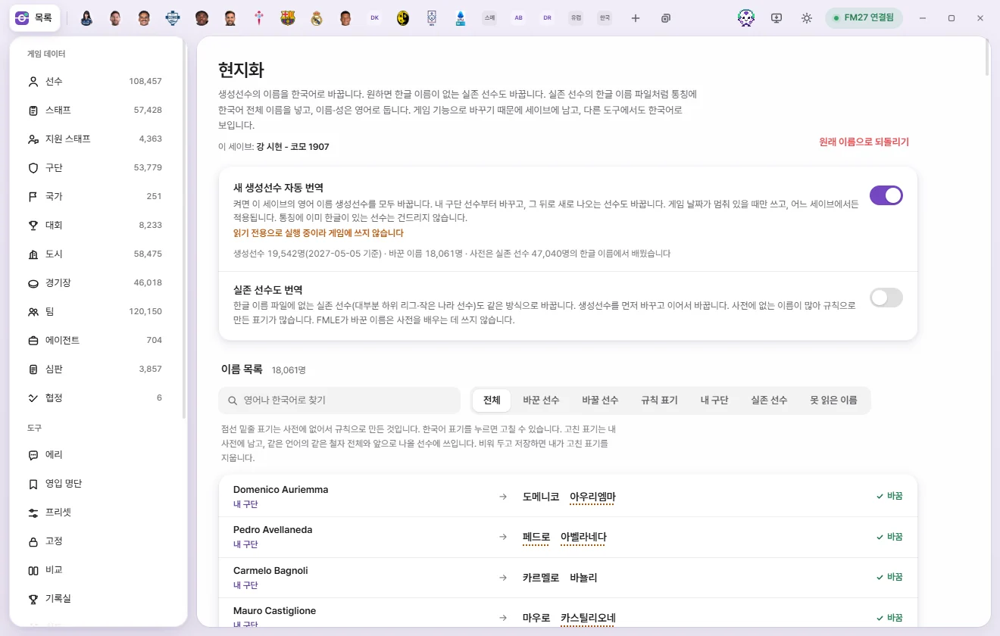
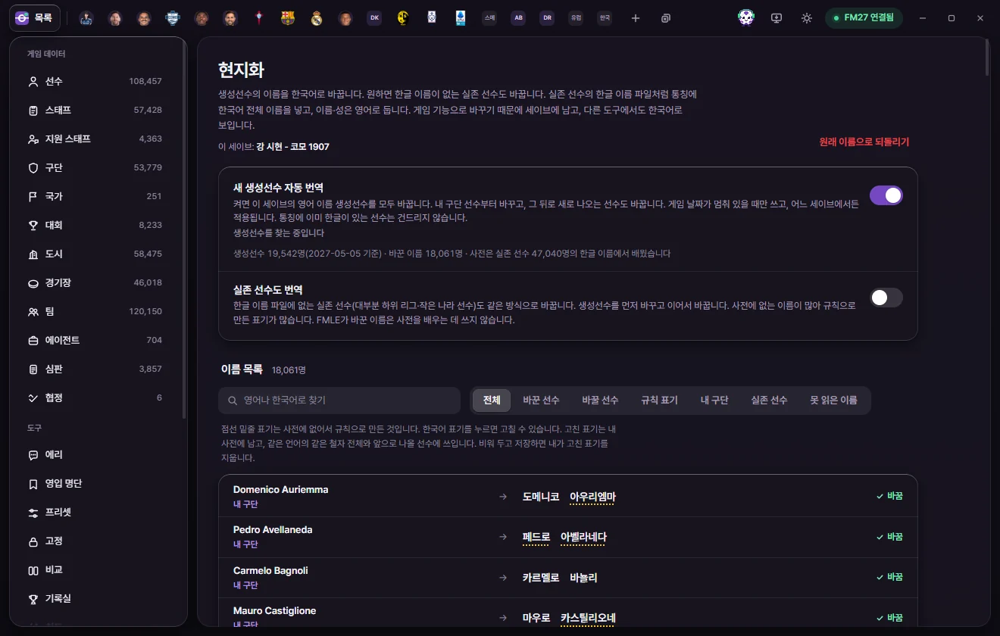

도구
현지화
영어로 나오는 생성선수의 이름을 한국어로 바꿉니다. 원하면 한글 이름이 없는 실존 선수와 스태프도 바꿉니다. 게임 기능으로 바꾸기 때문에 세이브에 남습니다.



무엇을 바꾸나요
FM27의 생성선수는 이름이 영어로 나옵니다. 현지화는 그 선수의 통칭에 한국어 전체 이름을 넣습니다(예: Giacomo Nocera → 자코모 노체라). 이름·성은 영어 그대로 둡니다. 실존 선수의 한글 이름 파일이 하는 방식과 같아서 실존 선수와 똑같이 보입니다.
- 게임 기능으로 이름을 바꾸기 때문에 세이브에 남습니다. FMLE를 꺼도 남고, 다른 도구에서도 한국어로 보입니다.
- 통칭에 이미 한글이 있는 사람은 건드리지 않습니다.
- 원래 통칭이 있던 생성선수(별명 이름 등)는 그 통칭을 번역합니다.
- 화면 위 '이 세이브:' 줄에 지금 어느 세이브에 쓰는지 보입니다.
한국어 표기를 정하는 방법
이름 한 단어마다 아래 순서로 표기를 고릅니다.
- 내가 고친 표기(내 사전)
- 같은 나라·같은 언어 실존 선수의 한글 이름에서 배운 표기
- 그 언어의 음차 규칙
- 다른 나라에서 배운 표기
- 일반 규칙
FMLE는 세이브를 열 때마다 그 게임의 실존 선수가 가진 한글 이름에서 단어별 표기를 배웁니다. 그래서 실존 선수 한글 이름 파일을 쓰는 게임이면 같은 표기가 생성선수에 이어집니다. 그 파일이 없는 게임에서는 배울 것이 없어 규칙 표기만 나옵니다. FMLE가 바꾼 이름은 배우는 데 쓰지 않습니다.
어느 언어로 읽을지는 그 사람의 국적과 철자에 든 글자로 정합니다. 한국 이름은 성을 먼저 붙여 쓰고(김민준), 일본·중국 이름은 언론 표기를 따릅니다.
켜기
새 생성선수 자동 번역
- 스위치를 켭니다.
- 처음 한 번은 '세이브를 백업해 두셨습니까?'를 묻습니다. 세이브를 따로 백업한 뒤 백업했습니다를 누릅니다.
- 이 세이브의 영어 이름 생성선수를 내 구단 선수부터 차례로 바꿉니다. 그 뒤로 새로 나오는 생성선수도 바꿉니다.
- 게임 날짜가 멈춰 있을 때만 씁니다. 날짜가 넘어가는 중에는 기다렸다가 멈추면 이어서 바꿉니다.
- 새 생성선수는 게임 날짜로 7일에 한 번 찾습니다. 현지화 화면을 열면 바로 한 번 더 찾습니다.
- 스위치는 어느 세이브에서든 적용됩니다. FMLE를 꺼 둔 사이 나온 선수는 다음에 켤 때 따라잡습니다.
- 설정의 FMLE를 다시 켜면 지난번 상태 그대로를 끄면 FMLE를 켤 때 이 스위치도 꺼진 채로 시작합니다.
실존 선수도 번역
한글 이름 파일에 없는 실존 선수(대부분 하위 리그·작은 나라 선수)도 같은 방식으로 바꿉니다. 처음에는 꺼져 있습니다.
- 생성선수를 먼저 다 바꾸고 이어서 바꿉니다. 자동 번역 스위치가 켜져 있어야 진행합니다.
- 사전에 없는 이름이 많아서 규칙으로 만든 표기가 많습니다.
스태프도 번역
감독·코치·스카우트 같은 스태프 중 이름 어디에도 한글이 없는 사람을 바꿉니다. 생성 스태프와 실존 스태프를 모두 바꿉니다. 처음에는 꺼져 있고, 선수를 다 바꾼 뒤 이어서 바꿉니다.
두 스위치를 끄면 더는 바꾸지 않습니다. 이미 바꾼 이름은 남아 있고, '원래 이름으로 되돌리기'로 함께 되돌릴 수 있습니다.
진행 상황 보기
스위치 아래 줄에 지금 상태가 나옵니다.
| 상태 글 | 뜻 |
|---|---|
| 꺼져 있습니다 · 이 세이브에서 바꾼 이름 n명은 그대로 남아 있습니다 | 스위치가 꺼져 있습니다 |
| 세이브를 불러오면 시작합니다 | 게임에 열린 세이브가 없습니다 |
| 생성선수를 찾는 중입니다 | 게임의 선수를 읽고 있습니다 |
| 게임 날짜가 멈추면 이어서 바꿉니다 · n명 남음 | 게임이 날짜를 넘기는 중입니다 |
| 게임이 바빠서 잠시 뒤에 다시 합니다 | 잠깐 뒤 저절로 다시 합니다 |
| 바꾸는 중 · n명 남음 | 쓰는 중입니다. 막대에 진행이 보입니다 |
| 모두 바꿨습니다 · 새 생성선수가 나오면 이어서 바꿉니다 | 다 끝났습니다 |
| 읽기 전용으로 실행 중이라 게임에 쓰지 않습니다 | FMLE가 읽기 전용으로 켜져 있습니다 |
| 다른 사람과 같이 쓰는 이름 기록까지 바뀌어서 멈췄습니다 | 다른 사람의 이름까지 바뀔 수 있는 경우를 막으려고 멈췄습니다. FMLE를 다시 켤 때까지 더 쓰지 않습니다 |
그 아래 줄에는 생성선수 수(언제 기준인지), 한글 이름이 없는 실존 선수·스태프 수, 바꾼 이름, 바꿀 이름, 못 읽은 이름, 사전을 몇 명에게서 배웠는지가 보입니다.
이름 목록과 표기 고치기
이름 목록에 '원래 이름 → 한국어'가 한 줄씩 나옵니다. 줄 끝에 '바꿈', '바꿀 예정', '그대로'가 붙습니다.
- 찾기: 영어나 한국어로 찾습니다.
- 거르기: 전체, 바꾼 선수, 바꿀 선수, 규칙 표기, 내 구단, 실존 선수, 스태프, 못 읽은 이름.
- 한 번에 200명씩 보이고, 아래 n명 더 보기로 더 봅니다.
- 점선 밑줄 표기는 사전에 없어서 규칙으로 만든 것입니다. 단어에 마우스를 올리면 언어와 출처(내가 고친 표기 / 실존 선수의 한글 이름에서 배운 표기 / 사전에 없어 규칙으로 만든 표기 / 로마자가 아니라 그대로 둔 글자)가 보입니다.
표기 고치기
- 고칠 한국어 단어를 누릅니다.
- 새 표기를 한글로 씁니다.
- Enter나 저장 단추를 누릅니다. Esc는 그만둡니다.
고친 표기는 내 사전에 남고, 같은 언어의 같은 철자 전체와 앞으로 나올 선수에 쓰입니다. 자동 번역이 켜져 있으면 이미 바꾼 같은 철자의 선수도 차례로 다시 씁니다. 칸을 비우고 저장하면 내가 고친 표기를 지우고 사전·규칙 표기로 돌아갑니다.
원래 이름으로 되돌리기
화면 오른쪽 위의 원래 이름으로 되돌리기를 누르면 확인한 뒤 되돌립니다.
- 이 세이브에서 FMLE가 바꾼 통칭만 원래대로 돌립니다. 생성선수, 실존 선수, 스태프 모두입니다.
- 지금도 FMLE가 쓴 그대로인 사람만 돌립니다. 그사이 게임이나 다른 도구로 바뀐 이름은 두고 갑니다.
- 원래 통칭이 없던 사람은 통칭을 지웁니다.
- 자동 번역도 꺼집니다. 내가 고친 표기(내 사전)는 남습니다.
- 되돌리는 것도 게임 날짜가 멈춰 있을 때 진행합니다. 진행은 상태 줄에 '원래 이름으로 되돌리는 중 · n명 남음'으로 보입니다.